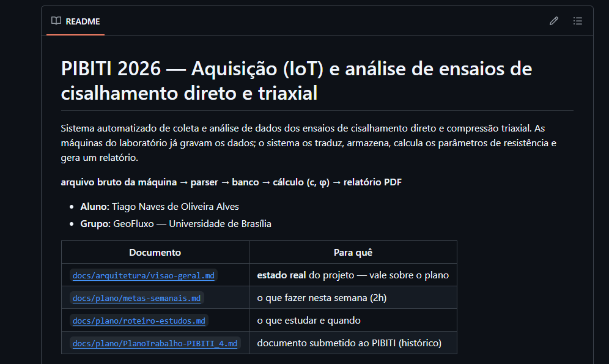

Reunião de alinhamento
Do arquivo da máquina à envoltória
Sistema automatizado de coleta e análise dos ensaios de cisalhamento direto
Tiago Naves de Oliveira Alves
Reunião com o orientador
Abertura · resultado primeiro
1.043 ensaios de cisalhamento direto, lidos automaticamente — de 2023 até hoje
33°–41°
φ, ângulo de atrito
6–53 kPa
c, coesão
> 0,95
R² na maioria dos grupos
51
envoltórias de Mohr-Coulomb completas — estimativa superior
O resto desta apresentação é o que sustenta este resultado — e o que ainda falta confirmar para confiar nele.
Por que “estimativa superior”
As 51 saem da regra provisória de agrupamento (mesma amostra, condição e dia, ≥ 3 tensões normais), contada antes do filtro de não-ruptura.
docs/arquitetura/perguntas-orientador.md §Abertura e §Q1 · formato-bruto.md §6
Roteiro
- 01O que mudou no escopo do projetoSlides 04–05
- 02O que o acervo escondia — e como o sistema pegouSlides 06–14
- 03O que essas descobertas mudaram no desenho do sistemaSlide 15
- 04Onde o projeto está guardadoSlide 16
- 05O que ficou em abertoSlide 17
01 · Escopo
O plano previa sensores. O laboratório já entrega dado pronto.
| Previsto no plano | O que se verificou | Efeito |
|---|---|---|
| Integrar sensores a um Raspberry Pi | As máquinas já digitalizam e gravam | Sai o módulo de hardware |
| Ler célula de carga e LVDT | Não há sinal cru a ler | Sai a calibração de transdutores |
| Converter carga → força → tensão | A máquina entrega σ e τ prontos | Saem as semanas 12 e 13 |
| Corrigir a área pelo deslocamento | A máquina entrega a área corrigida | Idem |
| Coleta manual dos arquivos | Máquinas em rede | Coleta vira cópia |
Entra no lugar
- Módulo de parsing do formato das máquinas
- Triagem de qualidade dos ensaios
- Agrupamento de arquivos em séries
- Relatório em PDF com gráficos
O trabalho não encolheu — mudou de natureza: da ponte sensor→computador para engenharia de dados aplicada à geotecnia.
docs/registros/2026-09-12-mudanca-de-escopo.md
01 · Escopo
O acervo, em números
1.081
arquivos de ensaio, mai/2023 – ago/2026
1.043
de cisalhamento direto
36
de adensamento
0
de compressão triaxial — a semana 8 do cronograma está bloqueada
Os identificadores mostram arquivos de mais de uma pessoa do grupo — inclusive uma campanha de solo-cimento e uma campanha de 2026 que varia a velocidade de cisalhamento.
docs/registros/2026-09-12-mudanca-de-escopo.md · 2026-09-12-triagem-do-acervo.md
02
O que o acervo escondia
- 129 descartes que pareciam ensaios perdidos — e quase todos não eram
- Ensaios que nunca romperam — e que uma planilha aceitaria
- Um identificador que não diz o que o arquivo contém
02 · Achado 1 de 3 · triagem
914 ensaios utilizáveis — e os 129 descartes não são “ensaios abortados”
| Situação | Arquivos | Falha? |
|---|---|---|
| Cisalhamento com 5 ou mais leituras | 914 | — |
| Só adensamento, com irmão | 108 | não |
| Só adensamento, órfão | 17 | sim |
| Cisalhamento com 1 a 4 leituras | 4 | sim |
| Total | 1.043 |
O que o dado mostra
108 arquivos sem cisalhamento têm um irmão de mesmo ID e mesma data — com a etapa que falta.
Interpretação · a confirmar no laboratório
O ensaio é salvo em duas partes. A perda real é de 2%, não os 13% da leitura anterior.
Decisão de desenho
O banco guarda o motivo de cada descarte (tabela ocorrencia), não um booleano.
docs/registros/2026-09-12-triagem-do-acervo.md · conferir: uv run python scripts/triagem_acervo.py
02 · Achado 2 de 3 · ensaios que nunca rompem
O NT 268 tem uma razão τ/σ comum — mas a curva nunca chega a um pico
NT 296 · σ = 50 kPa · rompeNT 268 · σ = 399 kPa · travado
O que o dado mostra
O NT 268 marca τ = 794 kPa sob σ = 399 kPa e só acelera até o arquivo acabar: os dois últimos pontos são 41× mais rígidos que o resto do ensaio.
Hipótese, não confirmada
NT 296 como solo-cimento é leitura a partir do identificador.
Por que importa
A planilha lê o máximo de τ e importaria 794 kPa como resistência.
docs/registros/2026-09-12-ensaios-travados.md · curvas: scripts/apoio_apresentacao.py (arquivos brutos)
02 · Achado 2 de 3 · o filtro em ação
O processamento manual lê o máximo de τ. Não tem como ver que a curva nunca rompeu.
- Etapa de cisalhamento utilizável914
- Pararam antes de 5 mm13
- τ de pico no último ponto421
- Os dois juntos — não romperam9
- Destes, com o trecho final acelerando3
| Ensaio | ID | σ | τ final | Desloc. | Pontos |
|---|---|---|---|---|---|
| NT 268 | B2-1D-400D | 399 kPa | 794 kPa | 3,3 mm | 13 |
| NT 625 | D7W4 | 400 kPa | 1.457 kPa | 3,8 mm | 13 |
Descarta da envoltória
Pico no último ponto e deslocamento abaixo de 5 mm.
Sinaliza, não descarta
Rigidez final acima de 3× a mediana — indício forte, não prova. A decisão fica com o pesquisador.
Um ensaio normal percorre 15–28 mm. Os travados pararam entre 3,3 e 3,8 mm — e gravaram exatamente 13 pontos.
docs/registros/2026-09-12-ensaios-travados.md · conferir: uv run python scripts/ensaios_nao_rompidos.py
02 · Achado 2 de 3 · forma, não magnitude
Um limiar de τ descartaria 211 ensaios para pegar 3
- 211com τ de pico acima de 1,2 × σ
- 106destes romperam antes do último ponto
- 3também falham no critério de não-ruptura
- 2×razão do NT 268 — a magnitude não o denuncia
Decisão
Nenhum critério de qualidade usa a magnitude de τ.
As maiores razões τ/σ do acervo
| NT | ID | σ | τ de pico | Razão | Caiu do pico |
|---|---|---|---|---|---|
| 296 | B5-45-50K | 50 | 1.182 | 23,6× | 88% |
| 281 | B2-45D-50KPA | 50 | 1.147 | 23,0× | 92% |
| 286 | B2-30D-50KPA | 51 | 1.094 | 21,7× | 90% |
| 273 | B5-30D-50KPA | 50 | 1.078 | 21,5× | 39% |
| 295 | B5-45D-100 | 100 | 1.637 | 16,4× | 0% |
Material cimentado tem coesão de centenas de kPa: sob σ baixa, razões altíssimas sem nada de errado. O NT 295 nunca desceu do pico — merece olhar humano.
Tensões em kPa · docs/registros/2026-09-12-forma-da-curva.md · conferir: uv run python scripts/razao_tau_sigma.py
02 · Achado 2 de 3 · a envoltória que sobra
Os 7 ensaios da série D1N que passam no filtro fecham uma envoltória sozinhos
Série D1N, 30/09/2024 · 7 ensaios que romperam · σ medido pela máquina
32,6°
φ, ângulo de atrito
24,0 kPa
c, coesão
0,987
R²
O ponto a 22 kPa é o NT 614: o ID dizia 160 kPa. Com o σ do nome, a coesão sairia negativa (−0,9 kPa) — ver slide 12. Sem o filtro de ruptura, o ensaio travado da série entraria e o R² cairia para 0,001.
docs/registros/2026-09-29-envoltoria-d1n.md · conferir: uv run python scripts/apoio_apresentacao.py variantes
02 · Achado 3 de 3 · o formato do ID
O identificador parece dizer a tensão normal — e em seis casos ele mente
| ID do ensaio | Ensaios | σ medido |
|---|---|---|
B2-15-200 | 2 | 200 e 400 kPa |
SP-4-1-200 | 2 | 200 e 400 kPa |
D1N16 | 6 | cinco a ~160 e um a 22 kPa |
D9N5 | 4 | três a ~500 e um a 600 kPa |
D9N4 | 5 | quatro a ~400 e um a 500 kPa |
D9N30 | 2 | 300 e 400 kPa |
748 IDs distintos · 96 usados em mais de um ensaio · 6 com σ divergindo mais de 15 kPa. Seis é um piso: 652 IDs aparecem uma vez só.
O que isso já muda
Nenhuma grandeza física vem do nome do arquivo. σ, τ e deslocamento vêm sempre da coluna que a máquina mediu.
O que estamos planejando
Não havia um padrão estabelecido entre os IDs digitados. A ideia é criar um, usando um subconjunto de ensaios como referência, e replicá-lo nos próximos ensaios — para facilitar pesquisas futuras e o banco de dados.
docs/registros/2026-09-12-id-nao-e-dado.md · conferir: uv run python scripts/id_versus_sigma.py
02 · Bônus · robustez do parser
Dois layouts com a mesma extensão — e nenhuma forma de ler avisa quando você erra o tipo
| DS / DSS | ODC | |
|---|---|---|
| Arquivos | 1.045 | 36 |
| Linhas de metadados | 7 | 9 |
| Nomes de coluna na linha | 8 | 10 |
| Colunas de dados | 17 | 11 |
| Linha 5 do cabeçalho | Dimensao Secao | N. Estagios |
Um arquivo de adensamento lido como cisalhamento
- silenciosoLeitura posicionalDevolve um corpo de prova de 5 mm em vez de 50.
- por sorteLeitura por chaveAcerta só porque a chave caiu nas 7 primeiras linhas.
- enganosopandas, skiprows=7Erro sobre contagem de campos, não sobre tipo de arquivo.
Decisão
O parser recusa o que não reconhece, em vez de adivinhar.
docs/registros/2026-09-13-dois-layouts.md · conferir: uv run python scripts/comparar_layouts.py
“Uma dedução plausível sobre o comportamento de um programa não vale nada até alguém rodar o programa.”
Registro de 13/09/2026 — sobre uma afirmação escrita em três documentos que nunca tinha sido testada. O script mediu, e ela estava errada.
03 · O que isso mudou no sistema
Quatro decisões que só existem porque o acervo foi lido, não suposto
- 1
O descarte guarda o motivoTabela
ocorrencia, não um booleano — os 108 não são os 17. - 2
Qualidade pela forma da curvaPico, queda e rigidez final — nunca a magnitude de τ.
- 3
Nenhuma grandeza vem do nome do arquivoσ, τ e deslocamento sempre da coluna medida.
- 4
O parser recusa o que não reconheceEm vez de adivinhar o layout e devolver alguma tabela.
É engenharia de dados aplicada à geotecnia: o valor não está em automatizar o que a planilha já fazia, está nas verificações que uma planilha não comporta.
04 · Onde o projeto está guardado
O projeto já está versionado — código, registros e histórico, num repositório no GitHub

05 · Em aberto
O que ficou em aberto
| Pergunta | Por que importa | Depende de |
|---|---|---|
| Uma série pode atravessar dois dias? | Define o agrupamento — e recontar as 51 envoltórias | Orientador · Q1 |
| Os 108 arquivos “só de adensamento” são ensaios salvos em duas partes? | Transforma uma dedução em fato | Laboratório · Q7 |
Os arquivos com ID MOVIMENTO são teste de equipamento? | Explica 2 dos 4 descartes curtos | Laboratório · Q7 |
| O NT 923 tem τ zero em todos os pontos | A triagem ganha uma 4ª condição: 914 → 913 | Próximo registro |
| O triaxial volta ao escopo? | Basta um único arquivo para destravar a semana 8 | Laboratório |
docs/arquitetura/perguntas-orientador.md · registros de 12 e 13/09/2026
PIBITI 2026 · GeoFluxo — UnB
Obrigado. Perguntas?
Registros completos, com script e figura por trás de cada número, em docs/registros/.